Snakes of Honduras
147 living snake species are recorded in Honduras in SnakeList: 18 venomous and 129 non-venomous, from 8 families.
- 147living species
- 18venomous
- 129non-venomous
- 8families
These totals count the unique living snake species SnakeList records in Honduras. A species counts if it is recorded anywhere in the country, so not every snake lives in every part of it.
Species
Showing 147 species
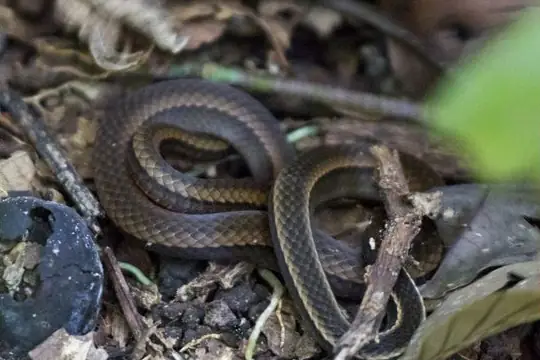
Adorned Graceful Brown SnakeRhadinaea decorata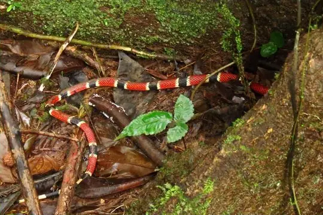
Allen's Coral SnakeMicrurus alleni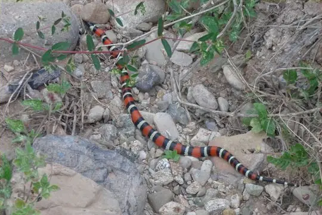
Atlantic Central American MilksnakeLampropeltis polyzona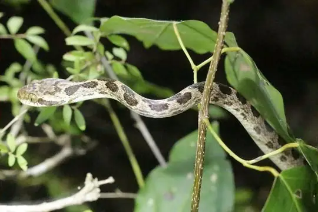
Banded Cat-eyed Snake (annulata)Leptodeira annulata- No photo yetBarred Forest RacerDendrophidion vinitor
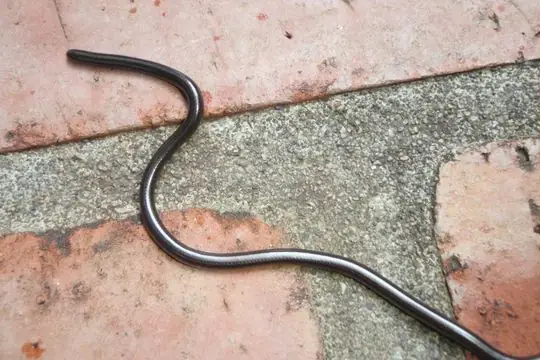
Black Blind Snake (ater)Epictia ater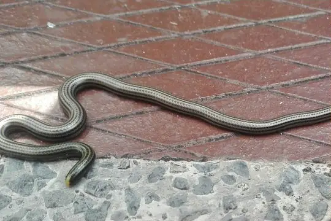
Black Blind Snake (magnamaculata)Epictia magnamaculata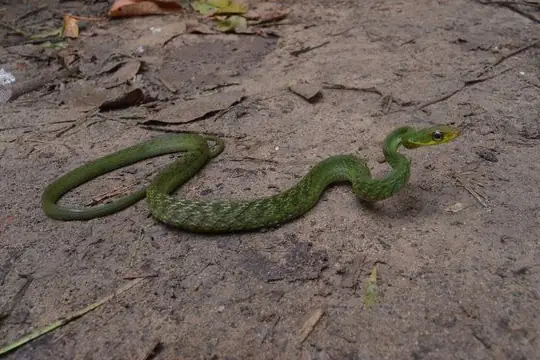
Black Forest RacerDrymobius melanotropis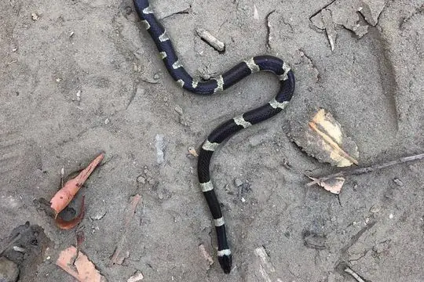
Black-banded Cat-eyed SnakeLeptodeira nigrofasciata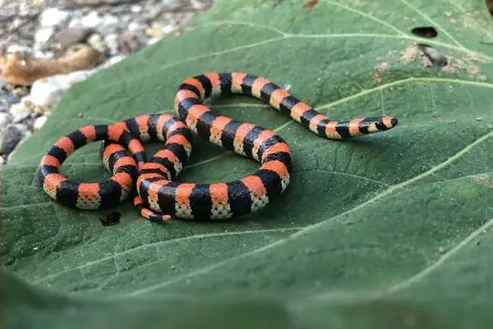
Black-banded SnakeScolecophis atrocinctus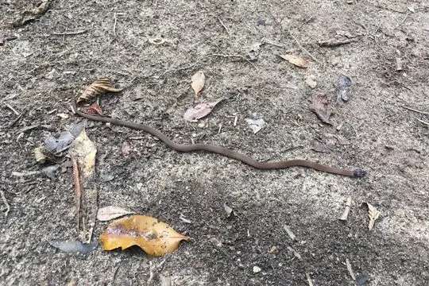
Black-headed Snake (melanocephala)Tantilla melanocephala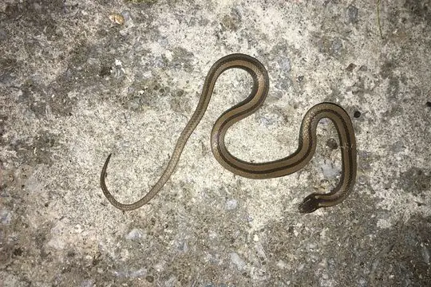
Black-striped Snake (imperialis)Coniophanes imperialis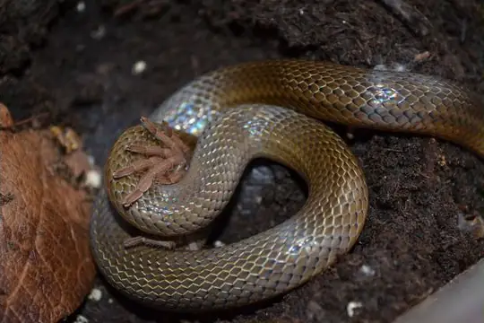
Blood SnakeStenorrhina freminvillei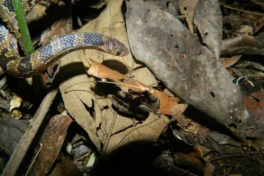
Blotched Hooknose SnakeFicimia publia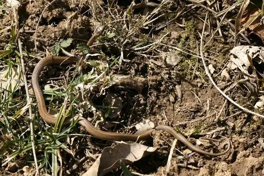
Brown SnakeStoreria dekayi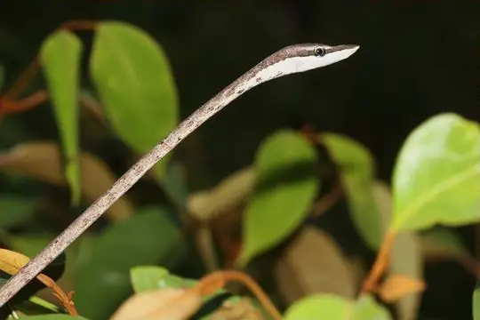
Brown VinesnakeOxybelis aeneus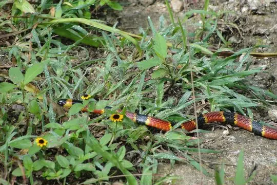
Brown's Coral SnakeMicrurus browni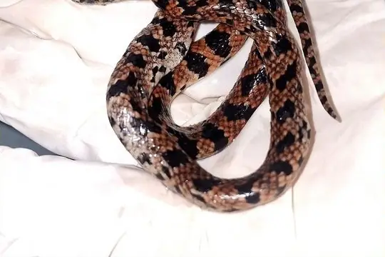
Carr's Snail SuckerSibon carri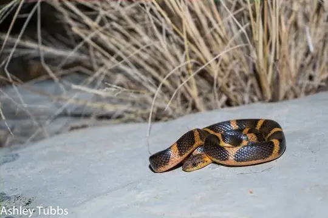
Cat-eyed Snake (septentrionalis)Leptodeira septentrionalis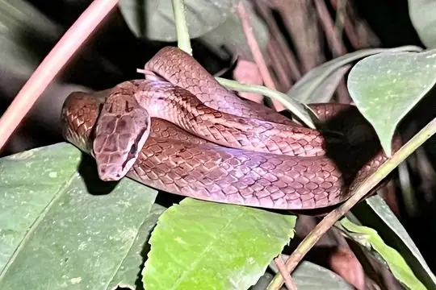
Central America Lizard EaterMastigodryas alternatus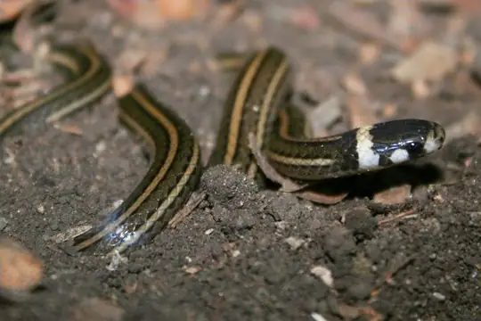
Central American Centipede SnakeTantilla taeniata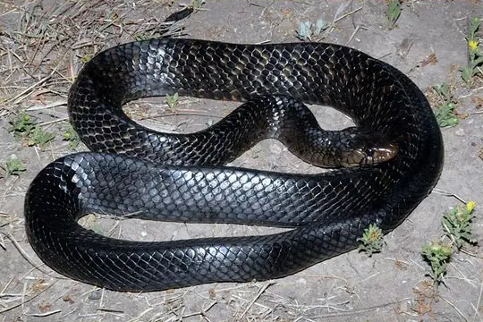
Central American Indigo SnakeDrymarchon melanurus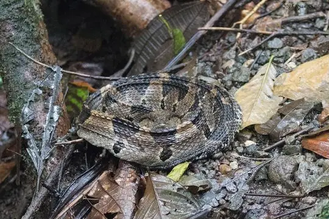
Central American Jumping Pit ViperMetlapilcoatlus mexicanus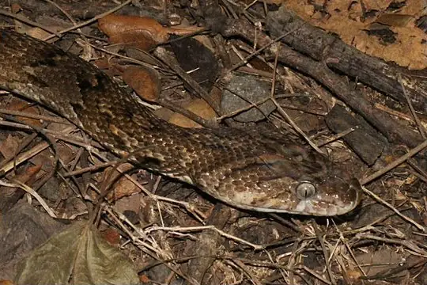
Central American Lyre SnakeTrimorphodon quadruplex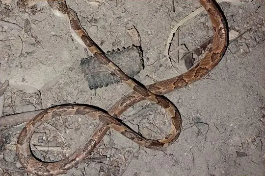
Central American Tree SnakeImantodes gemmistratus- No photo yetCerro Texiguat Earth SnakeGeophis damiani
- No photo yetChiapan BoaUngaliophis continentalis
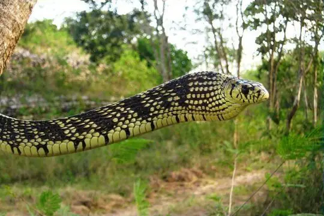
Chicken SnakeSpilotes pullatus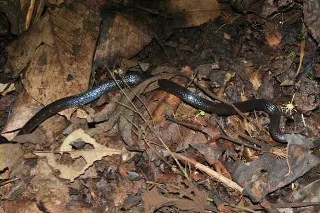
Cloud Forest Earth SnakeGeophis nephodrymus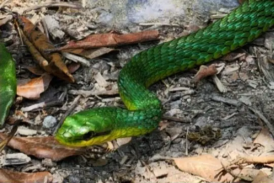
Cloud Forest Parrot SnakeLeptophis modestus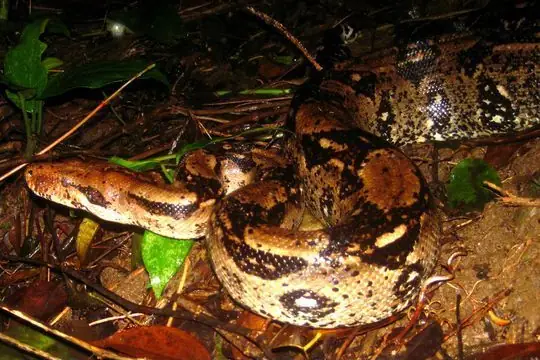
Colombian BoaBoa imperator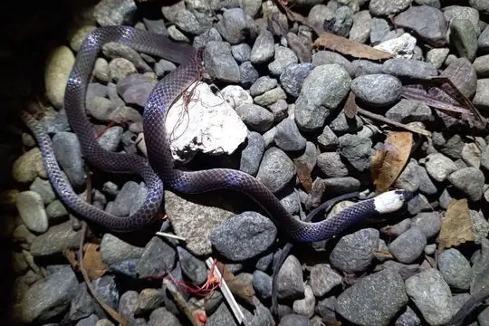
Colombian Longtail SnakeEnuliophis sclateri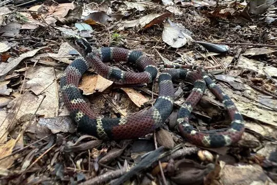
Common Neckband SnakeScaphiodontophis venustissimus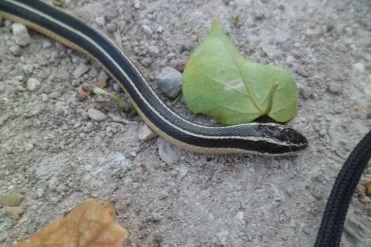
Cope's Black-striped SnakeConiophanes piceivittis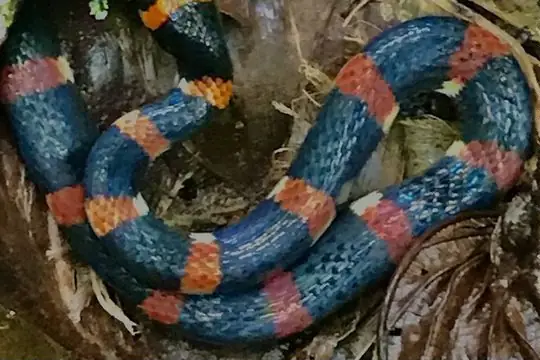
Cope's False Coral SnakePliocercus euryzonus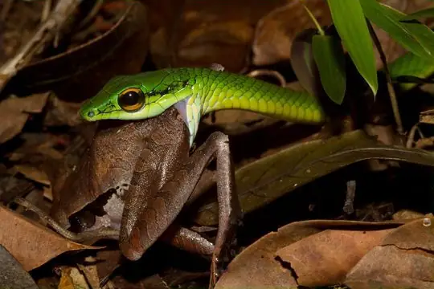
Cope's Parrot SnakeLeptophis depressirostris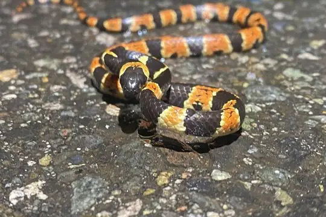
Cope's Snail SuckerSibon anthracops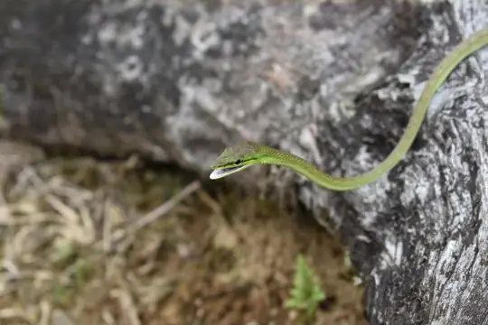
Cope's Vine SnakeOxybelis brevirostris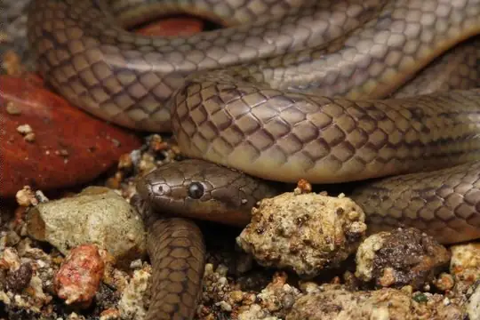
Costa Rica Water SnakeHydromorphus concolor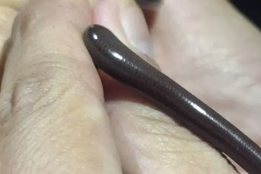
Costa Rica Worm SnakeAmerotyphlops costaricensis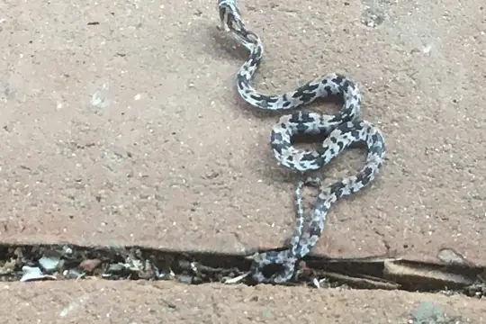
Costal Lyre SnakeTrimorphodon biscutatus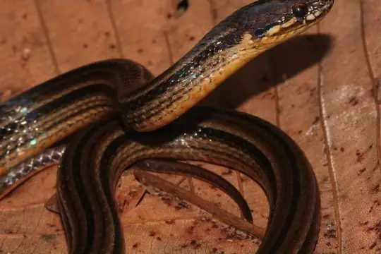
Cusuco Graceful Brown SnakeRhadinella pegosalyta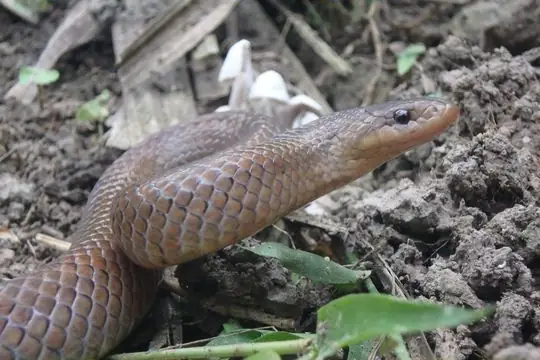
Degenhardt's Scorpion-eating SnakeStenorrhina degenhardtii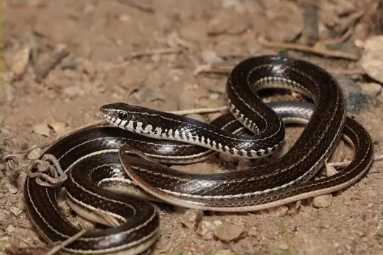
Dunn's Road GuarderCrisantophis nevermanni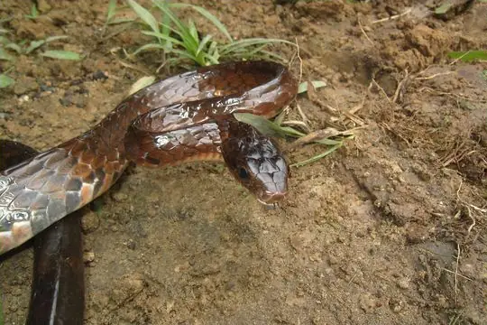
Ecuador SipoChironius grandisquamis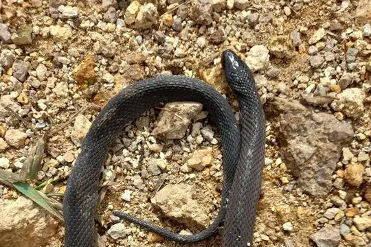
Espinal's Coffee SnakeNinia espinali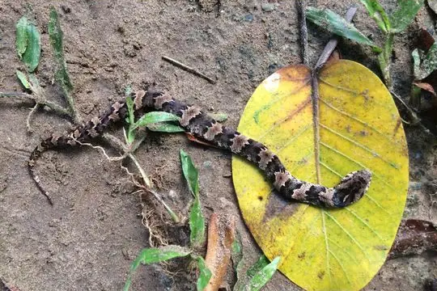
False Fer-de-lanceXenodon rabdocephalus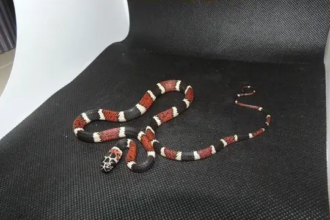
False Tree CoralRhinobothryum bovallii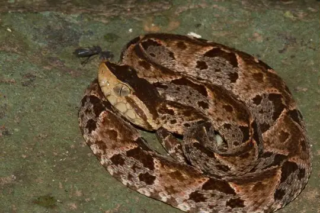
Fer-de-lanceBothrops asper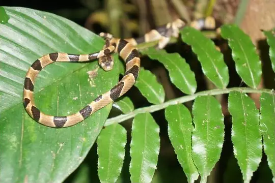
Fiddle-string SnakeImantodes cenchoa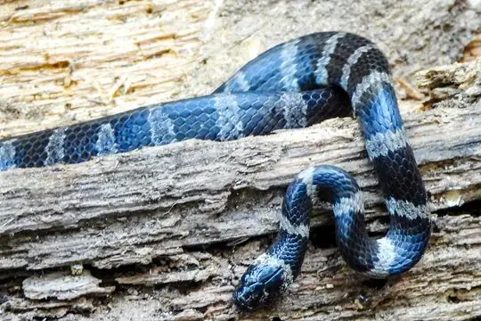
Fischer's Snail-eating SnakeTropidodipsas fischeri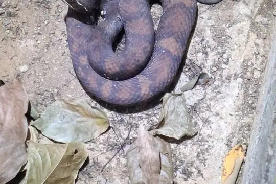
Gloyd's MoccasinAgkistrodon howardgloydi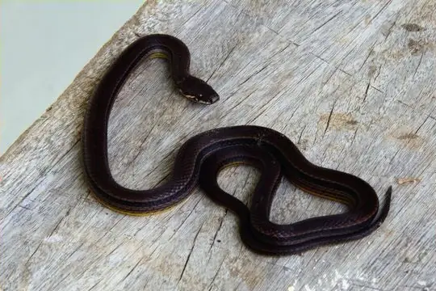
Godman's Graceful Brown SnakeRhadinella godmani- Godman's Montane Pit ViperCerrophidion godmani
- Greater Centipede SnakeTantilla impensa
- Green Highland RacerDrymobius chloroticus
- Green Rat Snake (triaspis)Senticolis triaspis
- Green Vine Snake (fulgidus)Oxybelis fulgidus
- Guanaja Longtail SnakeEnulius bifoveatus
- Guatemala Neckband SnakeScaphiodontophis annulatus
- Guatemalan Vine SnakeOxybelis koehleri
- Guifarro's Palm PitviperBothriechis guifarroi
- Hallowell's Centipede SnakeTantilla vermiformis
- Highland Garter SnakeThamnophis fulvus
- Hoffmann's Earth SnakeGeophis hoffmanni
- Hognosed Pit ViperPorthidium nasutum
- Honduran Milk SnakeLampropeltis abnorma
- Honduras Jumping Pit ViperMetlapilcoatlus indomitus
- Honduras Montane PitviperCerrophidion wilsoni
- Honduras Worm SnakeAmerotyphlops tycherus
- Kinkelin Graceful Brown SnakeRhadinella kinkelini
- Linton's Dwarf Short-tail SnakeTantillita lintoni
- No photo yetLydia’s Little SnakeTantilla lydia
- March's Palm Pit ViperBothriechis marchi
- Mena's Centipede SnakeTantilla lempira
- Merendon Palm Pit ViperBothriechis thalassinus
- No photo yetMertens' Earth SnakeGeophis fulvoguttatus
- Mexican Blind SnakeAnomalepis mexicana
- Mexican Burrowing PythonLoxocemus bicolor
- Mexican MoccasinAgkistrodon bilineatus
- Mexican Parrot SnakeLeptophis mexicanus
- Middle American Burrowing Snake (quadrivirgatum)Adelphicos quadrivirgatum
- Middle American Burrowing Snake (visoninum)Adelphicos visoninum
- Middle American RattlesnakeCrotalus simus
- Mimic False Coral SnakeErythrolamprus mimus
- Monte Cristi Graceful Brown SnakeRhadinella montecristi
- Mussurana (clelia)Clelia clelia
- Neotropical Whip SnakeMasticophis mentovarius
- Northern Banded Coffee SnakeNinia pavimentata
- Oliver's Parrot Snake (nebulosus)Leptophis nebulosus
- Orangebelly Swamp SnakeTretanorhinus nigroluteus
- Pacific Longtail SnakeEnulius flavitorques
- Pale Ground SnakeUrotheca decipiens
- Puffing SnakePhrynonax poecilonotus
- Red-headed Forest RacerDendrophidion rufiterminorum
- Redback Coffee SnakeNinia sebae
- Ringed Snail SuckerSibon annulatus
- Ringed Tree BoaCorallus annulatus
- Ringneck Coffee SnakeNinia diademata
- Road GuarderConophis lineatus
- Roatan Coral SnakeMicrurus ruatanus
- Roatan Long-tailed SnakeEnulius roatanensis
- Roatan VinesnakeOxybelis wilsoni
- Rosebelly Earth SnakeGeophis rhodogaster
- Rough Coffee SnakeNothopsis rugosus
- Rusty-headed SnakeAmastridium sapperi
- Salmon-bellied RacerMastigodryas melanolomus
- Slender Hognose ViperPorthidium ophryomegas
- Slender Snail SuckerSibon dimidiatus
- Slinder ThreadsnakeEpictia phenops
- South American Forest RacerDendrophidion percarinatum
- Speckled RacerDrymobius margaritiferus
- Spotted Coffee SnakeNinia maculata
- No photo yetStadelman's Worm SnakeAmerotyphlops stadelmani
- Stejneger's Snail SuckerSibon longifrenis
- Striped GlasstailUrotheca guentheri
- Striped Lizard EaterMastigodryas dorsalis
- Striped Lowland SnakeLeptodrymus pulcherrimus
- No photo yetSwan Island RacerCubophis brooksi
- Tearful Pine-Oak SnakeRhadinella lachrymans
- No photo yetTerrestrial Snail SuckerTropidodipsas sartorii
- No photo yetTexiguat Centipede SnakeTantilla olympia
- Three-banded Centipede SnakeTantilla tritaeniata
- Two-colored Snail-eaterDipsas bicolor
- Two-spotted SnakeConiophanes bipunctatus
- Variable Coral SnakeMicrurus diastema
- Variegated False Coral SnakePliocercus elapoides
- Western Tree SnakeImantodes inornatus
- Yellow-red Rat SnakePseudelaphe flavirufa
- Yellowbelly SnakeConiophanes fissidens
- Dendrophidion apharocybe
- No photo yetEpictia martinezi
- Leptodeira rhombifera
- Metlapilcoatlus borealis
- Omoadiphas aurula
- No photo yetOmoadiphas cannula
- Omoadiphas texiguatensis
- Rhadinella anachoreta
- No photo yetRhadinella lisyae
- No photo yetRhadinella tolpanorum
- No photo yetSibon manzanaresi
- No photo yetSibon miskitus
- Tantilla armillata
- Tantilla excelsa
- Tantilla gottei
- No photo yetTantilla psittaca
- Tantilla stenigrammi
No snakes in Honduras match.
Honduras’s snakes in numbers
- Families: Colubridae 117, Viperidae 14, Elapidae 4, Leptotyphlopidae 4, Boidae 3, Typhlopidae 3, Anomalepididae 1, Loxocemidae 1.
- 28 are recorded in no other country or territory in SnakeList: Cerro Texiguat Earth Snake, Cloud Forest Earth Snake, Cusuco Graceful Brown Snake, Guanaja Longtail Snake, Guifarro's Palm Pitviper, Honduras Worm Snake, Lydia’s Little Snake, March's Palm Pit Viper, Mena's Centipede Snake, Roatan Coral Snake, Roatan Long-tailed Snake, Roatan Vinesnake and 16 more.
How precisely they are recorded
Of the 147 living species recorded in Honduras, 100 are recorded by department in SnakeList’s data; 47 are recorded only for Honduras as a whole, so the department pages list them as possible rather than recorded. SnakeList records each species by department, not by exact spot, so a species listed for a department may live in only part of it.
Departments
The departments where SnakeList records snakes, with how many living species are recorded in each. Each page has its species, venomous snakes, families, the species found only there, its cities and neighbours.
- Atlántida 35 species
- Bay Islands 14 species
- Choluteca 6 species
- Colón 26 species
- Comayagua 15 species
- Copán 11 species
- Cortés 48 species
- El Paraíso 21 species
- Francisco Morazán 31 species
- Gracias a Dios 12 species
- Intibucá 5 species
- La Paz 6 species
- Lempira 26 species
- Ocotepeque 6 species
- Olancho 17 species
- Santa Bárbara 34 species
- Valle 3 species
- Yoro 18 species
No place matches that.
Cities
Its biggest cities, biggest first. SnakeList records snakes by department, not by city, so each city page shows the species recorded in its department and, separately, those only possible there - not species confirmed in the city.
- Tegucigalpa Francisco Morazán
- San Pedro Sula Cortés
No place matches that.